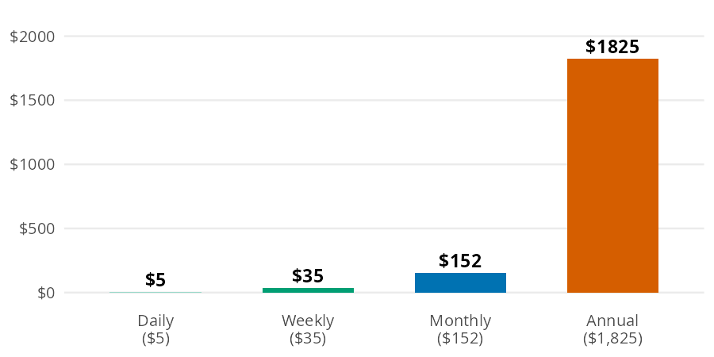
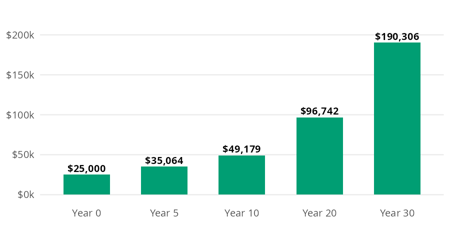

rent_share = percent_of_income(expense=960, income=3200)
rent_shareBudgeting
Most budgeting decisions come down to a handful of small calculations. You need to know how big a slice of your paycheck an expense takes and what a daily habit costs over a year. You also need to know what money spent today could have grown into, and how long an upfront purchase takes to pay for itself. The Budgeting chapter of the book builds each of these from scratch. In this page I’ll answer the same questions with percent_of_income(), to_annual(), to_monthly(), opportunity_cost(), and months_to_break_even(), using the chapter’s numbers so you can check every result against the book.
The budgeting functions
All five functions accept arrays, and they follow the conventions in Get started: rates go in as decimals and ratios come out as percents.
| Function | Returns | Units |
|---|---|---|
| percent_of_income() | an expense as a share of income | percent (30 is 30%) |
| to_annual() | a daily, weekly, or monthly amount per year | dollars per year |
| to_monthly() | a daily, weekly, or annual amount per month | dollars per month |
| opportunity_cost() | what an amount could grow to if invested | dollars (rate is a decimal) |
| months_to_break_even() | months until savings cover an upfront cost | months, not rounded |
What does a small habit cost over a year?
A $5 daily coffee doesn’t feel expensive, because you only ever pay $5 at a time. The same habit looks very different at longer time scales:

Each bar is the one before it scaled by the number of periods it contains. to_annual() makes the daily to yearly jump in one step:
coffee_year = to_annual(amount=5, period="daily")
coffee_year1825.0The coffee habit costs $1,825 a year. Suddenly it’s a real number you can evaluate.
Most budgets work in months
to_monthly() goes in the other direction. It converts a daily, weekly, or annual amount to a monthly one, which is the unit most budgets use. Here is the coffee habit per month:
coffee_month = to_monthly(amount=5, period="daily")
coffee_month152.20000000000002Coffee runs $152.20 a month, which matches the monthly bar above. The chapter’s second example converts $150 a week in groceries to a monthly amount:
groceries_month = to_monthly(amount=150, period="weekly")
groceries_month649.5Groceries come to $649.50 a month. That is more than four weeks’ worth, because a month holds about 4.33 weeks.
What could the money have become?
The chapter frames opportunity cost with a car. Buying a used one for $15,000 instead of a new one for $40,000 frees up $25,000, which the chapter invests at 7% a year. Every dollar spent isn’t just that dollar; it’s what that dollar could have become.

Each year multiplies the previous bar by 1.07. opportunity_cost() compounds the amount over the full horizon, with the rate as a decimal:
car_gap = opportunity_cost(amount=25000, rate=0.07, years=30)
car_gap190306.37606655105After 30 years, the $25,000 gap grows to about $190,306. That’s not a car payment difference; that’s a retirement chapter.
When does an upfront cost pay for itself?
Some purchases cost money now to save money later: a membership, a better phone plan, or a used bike for commuting. The chapter’s example is a $500 membership that saves $60 a month.

Each month the cumulative savings bar grows by $60, and break even is the first month that bar crosses the $500 line. months_to_break_even() divides the upfront cost by the monthly savings:
import math
be_months = months_to_break_even(upfront_cost=500, monthly_savings=60)
be_months8.333333333333334The membership pays for itself after 8.3 months. The result isn’t rounded. Use math.ceil() to find the first whole month you come out ahead: month 9, the first bar above the line in the bar model. If you’ll keep the membership longer than that, it’s worth the upfront cost.
Variations
Array inputs let one call answer several versions of the same question. The chapter’s periodic expenses are a good example. Setting aside one twelfth of each annual cost every month builds a sinking fund (money saved each month for a known future expense). to_monthly() converts every expense at once:
sinking = pl.DataFrame({
"expense": ["car insurance", "gifts", "car maintenance", "vacation"],
"annual": [1200, 600, 1200, 2400],
})
sinking = sinking.with_columns(
monthly=to_monthly(amount=sinking["annual"].to_numpy(), period="annual")
)
sinking
shape: (4, 3)
| expense | annual | monthly |
|---|---|---|
| str | i64 | f64 |
| "car insurance" | 1200 | 100.0 |
| "gifts" | 600 | 50.0 |
| "car maintenance" | 1200 | 100.0 |
| "vacation" | 2400 | 200.0 |
Together these periodic expenses need $450 a month. When a bill arrives, the money is already there.
One call compares every time horizon
The same approach works for time horizons. Passing several values to years reproduces each checkpoint in the car bar model:
horizons = [0, 5, 10, 20, 30]
pl.DataFrame({
"years": horizons,
"value": opportunity_cost(amount=25000, rate=0.07, years=horizons),
})
shape: (5, 2)
| years | value |
|---|---|
| i64 | f64 |
| 0 | 25000.0 |
| 5 | 35063.793268 |
| 10 | 49178.783932 |
| 20 | 96742.111562 |
| 30 | 190306.376067 |
WarningLimits
to_monthly() uses rounded factors (30.44 days and 4.33 weeks per month), while to_annual() uses 365 days and 52 weeks per year. A round trip through both functions drifts slightly. The weekly grocery bill gives a different yearly total depending on the path:
(
to_annual(amount=150, period="weekly"),
to_annual(amount=groceries_month, period="monthly"),
)(7800.0, 7794.0)A few other limits apply:
- to_annual() accepts
"daily","weekly", or"monthly", and to_monthly() accepts"daily","weekly", or"annual". Any otherperiodraises aValueError. - opportunity_cost() assumes the same return every year and ignores inflation, taxes, and fund fees.
- months_to_break_even() assumes the savings are the same every month and ignores what the upfront cost could have earned if invested.
- percent_of_income() and months_to_break_even() raise a
ValueErrorwhenincomeor monthly_savings is zero or negative.
Putting it together
Back to the $3,200 first job budget. The sections above produced four monthly costs: rent, groceries, coffee, and sinking funds. percent_of_income() takes the whole column at once, so one call shows how much of the paycheck each category claims:
budget = pl.DataFrame({
"category": ["rent", "groceries", "coffee", "sinking funds"],
"monthly": [960.0, groceries_month, coffee_month, sinking["monthly"].sum()],
})
budget = budget.with_columns(
percent=percent_of_income(expense=budget["monthly"].to_numpy(), income=3200).round(1)
)
budget
shape: (4, 3)
| category | monthly | percent |
|---|---|---|
| str | f64 | f64 |
| "rent" | 960.0 | 30.0 |
| "groceries" | 649.5 | 20.3 |
| "coffee" | 152.2 | 4.8 |
| "sinking funds" | 450.0 | 14.1 |
These four categories take 69.1% of take home pay, which leaves $988.30 a month for investments, savings, and fun money.
Coffee is the smallest line in the budget, but it’s also the easiest to change. The code below invests one year of coffee money at 7% for 30 years instead:
coffee_invested = opportunity_cost(amount=coffee_year, rate=0.07, years=30)
coffee_invested13892.365452858226One year of $5 coffees could grow to about $13,892. That doesn’t mean you should give up coffee; it means the choice now has a price you can see. The Tracking Spending page applies the same idea to recurring costs with subscription_opportunity_cost().
Recap
Budgeting math is middle school math, and these five functions cover the calculations the chapter relies on most. percent_of_income() shows how big a slice each expense takes, to_annual() and to_monthly() put costs on the same time scale, and opportunity_cost() and months_to_break_even() put a price on spending decisions. Because each one accepts arrays, a single call can compare a whole budget, a list of periodic expenses, or several time horizons.
- Budgeting in Personal Finance: a field manual
- Reference: percent_of_income(), to_annual(), to_monthly(), opportunity_cost(), months_to_break_even()
- Next: Managing Debt